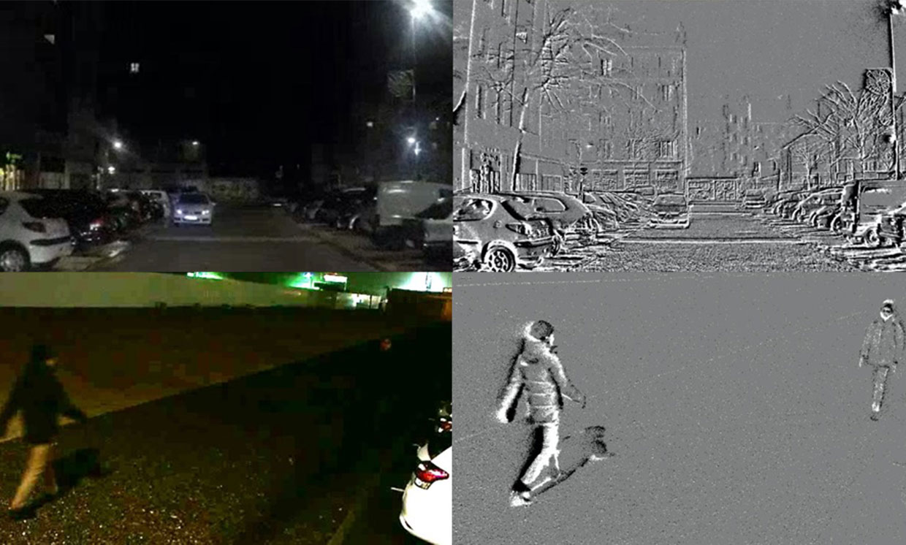

Development of Spiking Neural Networks for Modern Computer Vision
Sami BARCHID
José MENNESSON
Chaabane DJÉRABA
Artificial Neural Networks
- State-of-the-art almost everywhere
- High energy consumption
Spiking Neural Networks
- Inspired from biological neurons
- Asynchronous processing through spikes
- Energy-efficiency 📈
Event Cameras
- no motion blur, no redundancy, higher dynamic range
- asynchronous spike trains when intensity change
- Event camera 🤝 SNN
Limitations
- Performance still behind standard Deep Learning methods
- Limited to simple use cases
- Little to no works on modern vision tasks (e.g. object detection, ...)
Objectives
Develop approaches based on SNNs to explore modern vision tasks
Finished works
- Object Localizations (CBMI 2021)
- New representation for Event cameras (ICIP 2022 - submitted)
- Analysis on supervised SNNs for localization (ECCV 2022 - submitted)
Under development
- Neuromorphic robot arm control
- Neuromorphic autonomous car
- Event-based ball detection in sport applications